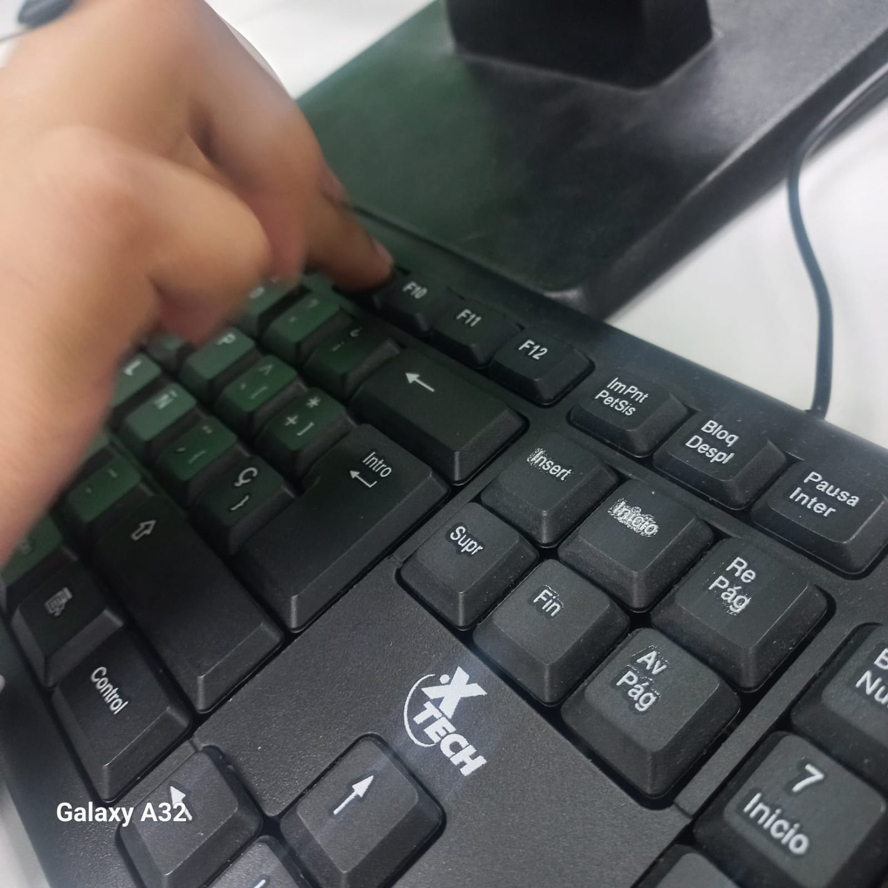
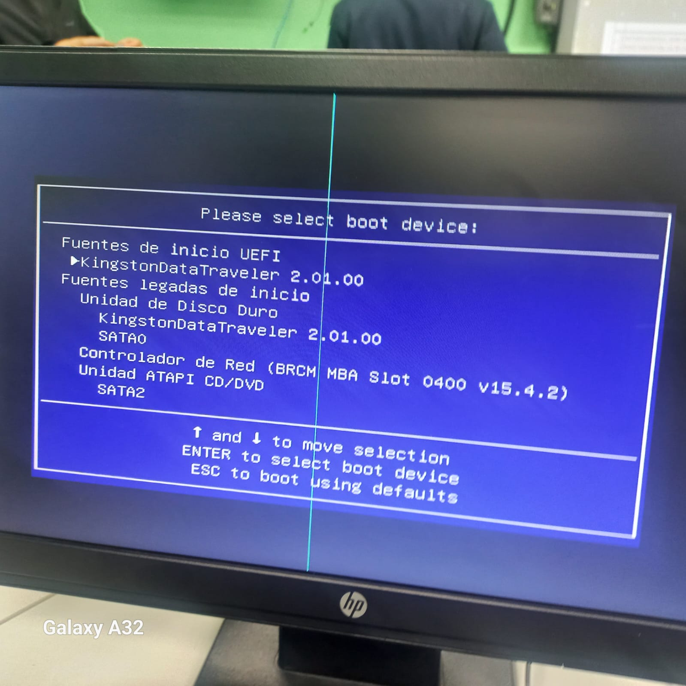
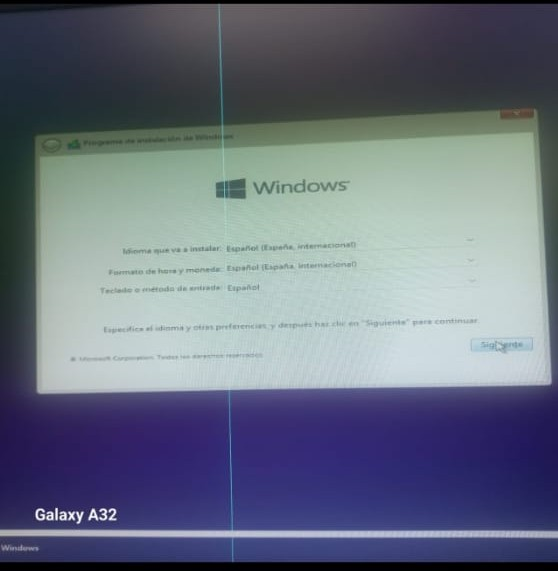
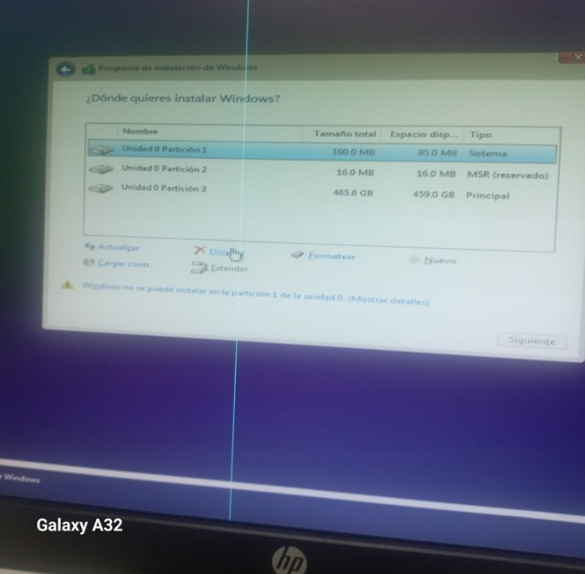
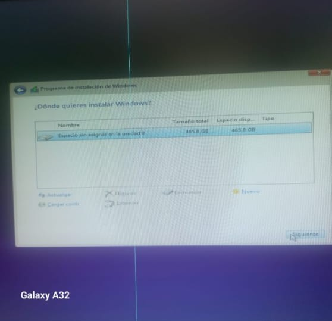
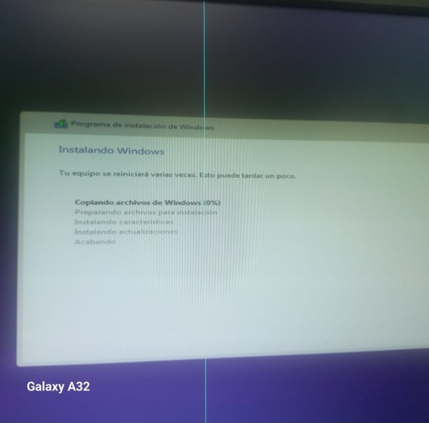
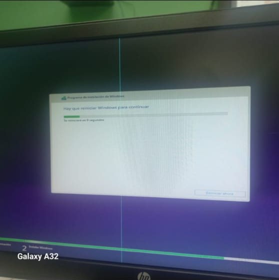
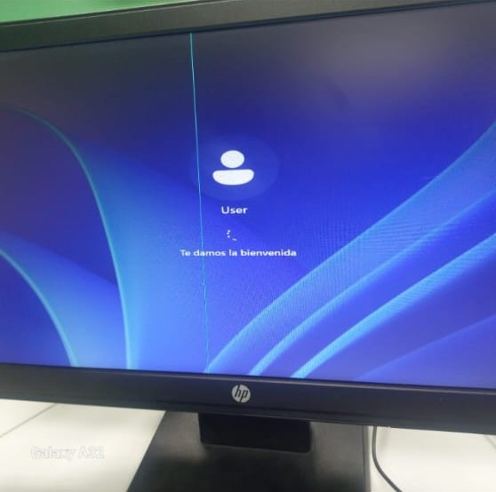

Creado con eXeLearning
Creado con eXeLearning
Ministerio de educación
Colegio Secundario de Volcán
Materia: Multimedia
integrantes: Verónica Rodríguez, Katherin Pineda, Alexandra Palacio, Aron Palacio y Jineth Batista
Profesor: Richard Caballero
Año: 2026
En el laboratorio de informática realizamos la instalación del sistema operativo Windows 11 en una computadora asignada.
Durante esta practica aprendimos a verificar los requisitos del equipo, preparar el medio de instalación y configurar el arranque desde una memoria USB booteable.
Este manual explica paso a paso el procedimiento realizado en clases de manera practica e interactiva.
Primero revisamos las características de la computadora asignada para verificar si era compatible con Windows 11. para ello ingresamos a: Configuracion-sistema-acerca de
Después de verificar los requisitos, realizamos un respaldo de la información importante para evitar la perdida de archivos.
Luego seleccionamos la imagen ISO autorizada de Windows 11 y preparamos la memoria USB booteable para comenzar la instalación.
1-Insertar la USB booteable en la computadora y reiniciamos el equipo.
Luego presionamos repetidamente la tecla F9 para abrir el menu de arranque y seleccionar la memoria USB


Idioma
hora
tipo de teclado
Luego presionamos siguiente
Después de iniciar desde la USB, apareció la pantalla de instalación de Windows 11 Seleccionamos:

Este es el paso tecnico mas importante.
Debemos
1-eliminar todas las particiones existentes de la unidad elegida
2-Asegurar que quede unicamente “espacio sin asignar en la unidad 0”.
3-hacer click en siguiente para que el sistema cree automaticamente la estructura necesaria.


El sistema comenzo a copiar archivos e instalar Windows automaticamente.
Durante este proceso la computadora se reinicio varias veces.



Finalmente configuramos
configuracion post instalacion: Definicion de usuario y red WIFI
Instalación de drivers: Actualización de controladores de hardware.
Software y base: instalacion de Office, navegadores y utilitarios.
CIERTO O FALSO: La tecla F9 permite abrir al menú de arranque ___
Que herramientas utilizamos para instalar windows?
-memoria USB booteable
-Bocina
-impresora
-La imagen del sistema operativo utilizada fue una imagen _______.
Que debemos revisar antes de instalar el sistema operativo?
El color del teclado
El fondo de pantalla
las características del equipo ✅
La practica realizada permitió aprender el proceso correcto de instalación de Windows 11 en una computadora.
Además, comprendimos la importancia de verificar los requisitos del sistema, preparar el medio de instalación y seguir correctamente cada paso para evitar errores durante la instalación.